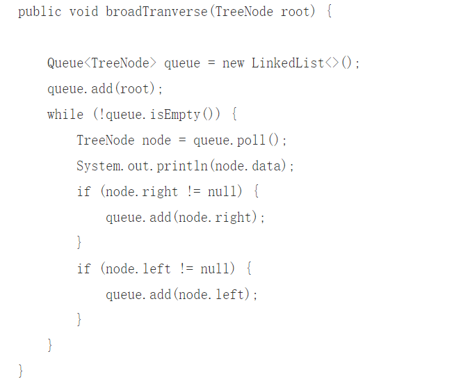

Breadth-first Search
Theory:
-
Simply put, BFS starts at the root node and traverses the nodes along the width of
the tree (graph). If all nodes are accessed, the algorithm is aborted. BFS is also
a blind search. Queue data structure is generally used to assist the implementation
of BFS algorithm.
Code (Java):

Tips：
- First, put the root node into the queue.
- Take the first node out of the queue and verify that it is a target.
- If the target is found, the search is ended and the results returned.
- Otherwise, it queues all its immediate children that have not yet been validated.
-
If the queue is empty, the entire graph has been checked -- that is, there are no objects
in the graph to be searched. End the search and return "no target found".
- Repeat step 2.
Complexity:
- Time complexity O(n)
- In the worst case, s is far away from T, so it needs to traverse the complete graph to
find it. However, traversal is not repeated, and traverses all vertices at most, so the
complexity is O(n).
- Space complexity O(n)
Application scenarios:
-
Graph structures have played an important role in solving many network-related problems.
For example, it is used to determine the best path in the Internet from one node to
another (the gateway from one network to another). One modeling method is to use an
undirected graph, in which vertices represent network nodes and edges represent
connections between nodes. With this model, breadth first search can be used to help
determine the minimum number of hops between nodes.
{% if posts %}
Comment Area:
{% for post in posts %}
{{ post.author_id }}
{{ post.create_date }}
{{ post.comment }}
{% endfor %}
{% else %}
No post here. You can publish one first.
{% endif %}